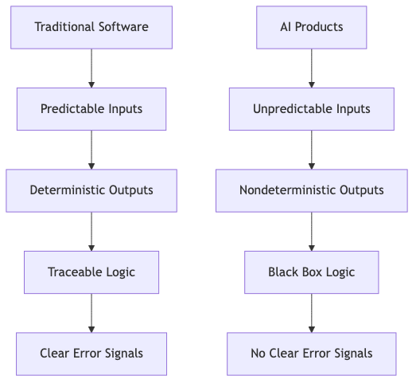
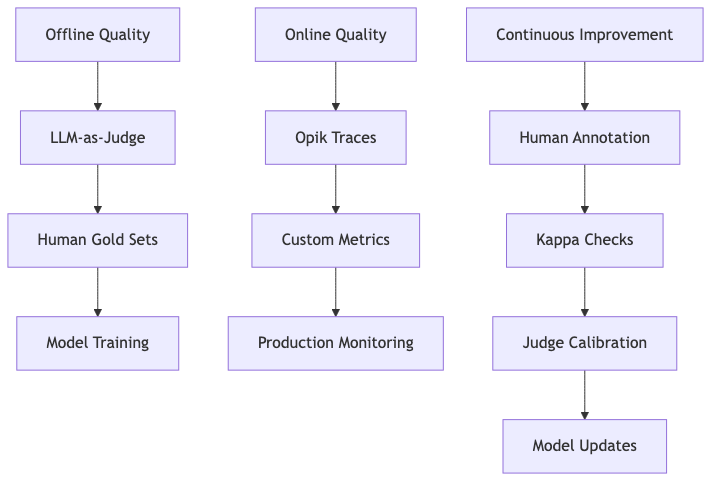

Evals Are NOT All You Need¶
"Evals are only important in the context of product quality, and product quality is a process." - Anonymous AI Product Lead
The Evals Obsession¶
Evals have become the de facto solution for AI product quality. But this obsession with "building good evals" often misses the bigger picture: product quality is a process, not a checklist. This article explains why traditional testing fails for AI systems and introduces a framework for ensuring quality in AI products.
Eval Maturity Ladder highlights how teams often focus on metrics without addressing the systemic challenges of AI product development. This section expands on that by showing why evals alone are insufficient.
Why Traditional Testing Breaks¶
Traditional software testing assumes predictable inputs and deterministic outputs. For example, booking a hotel on Booking.com involves predefined options (dates, cities, filters). Testing covers:
- Offline quality: Unit/integration tests before launch
- Online quality: Monitoring production errors with stack traces
- Continuous improvement: Fix bugs, retest, and ship
But AI products are fundamentally different:

Key differences: - User inputs are unbounded (e.g., "Find a pet-friendly hotel in Austin for next weekend") - Outputs are probabilistic (same input may yield different results) - No stack traces - only confident-sounding answers that may be wrongThis creates a feedback loop where: 1. Offline quality is hard to estimate (can't anticipate all inputs) 2. Online quality is hard to measure (no clear error signals) 3. Continuous improvement is unreliable (fixes may break with new inputs)
Model Versus Product¶
AI product quality involves two distinct layers:
Model Layer¶
- Focus: General capabilities (reasoning, coding, factuality)
- Metrics: Benchmarks (MMLU, HumanEval, LMArena)
- Example: OpenAI's GPT-4 scores on coding tasks
Product Layer¶
- Focus: Specific use cases (customer support, booking, RAG chatbots)
- Metrics: Task-specific (e.g., "Did the agent find the correct documentation link?")
- Example: Workpath AI Companion's tool call validation
Critical insight: Benchmark scores tell you what a model can do, not whether it will work for your product. A model might score 95% on a reasoning benchmark but fail on your product's edge cases.
The Three Pillars of AI Product Quality¶
AI product quality requires a system that addresses:
1. Offline Quality¶
- Goal: Estimate behavior before deployment
- Tools:
- Unit evals (e.g., check for forbidden strings)
- LLM-as-judge (e.g., validate RAG grounding)
- Human gold sets (e.g., Human Evals)
2. Online Quality¶
- Goal: Monitor real-world performance
- Tools:
- Opik for trace visualization and anomaly detection
- Custom metrics (e.g., "Did the agent hallucinate a URL?")
- AI Observability in Production
3. Continuous Improvement¶
- Goal: Create feedback loops that adapt to new inputs
- Tools:
- Human annotation sessions (e.g., resolving judge disagreements)
- Kappa checks for judge calibration
- Validation Protocol

¶The Mirage of "Good Evals"¶
Many teams treat "evals" as a magic bullet. But the term is misleading:
- Evals ≠ Metrics: A hallucination score of 1 is meaningless without context
- Evals ≠ Testing: Unit evals are not the same as unit tests
- Evals ≠ Quality: Task-specific metrics are needed, not generic ones
The solution: Build a process that includes: 1. Defining what "good" means for your product 2. Measuring it with the right tools at the right times 3. Learning from real-world failures 4. Closing the loop with fixes that stick
Conclusion¶
Evals are a tool, not a goal. They must be part of a broader system that includes: - Unit evals for fast, deterministic checks - LLM-as-judge for task-specific validation - Human evals for ground truth and calibration
The next step is to move beyond "building good evals" and toward building good systems that ensure quality at every stage of the product lifecycle.
Eval Maturity Ladder | behind the scenes of ai observability in production | Validation Protocol